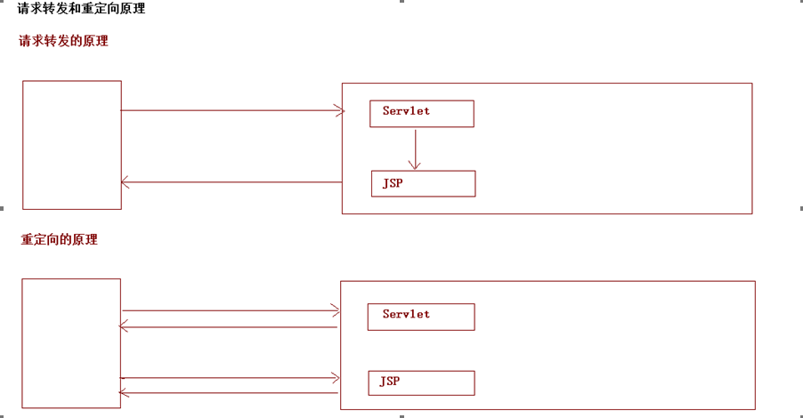

一. 今日目标二. 今日内容(一) HTTP协议1. 响应行2. 响应头3. 响应体(二) Response对象1. 设置响应行2. 设置响应头3. 设置响应体(三) 案例练习1. 案例 : 完成重定向重定向步骤重定向代码转发和重定向转发和重定向的原理重定向的特点:redirect转发的特点:forward路径写法2. 案例 : 输出字符数据到浏览器步骤示例乱码问题原因:response.getWriter()获取的流的默认编码是ISO-8859-1,该码表不支持中文解决示例3. 案例 : 输出字节数据到浏览器步骤代码示例(掌握)4. 案例 : 图片验证码验证码的本质和作用生成验证码图片使用验证码(四) ServletContext对象1. 什么是ServletContext?2. 获取ServletContext3. ServletContext功能获取文件MIME类型作为域对象存取数据范围读取WEB项目下文件4. 案例:文件下载需求分析步骤实现中文文件名问题
响应消息 : 服务器端发送给客户端的数据(理解)
请求部分可以分成三块 , 响应行 , 响应头 , 响应体
xHTTP/1.1 200 OKContent-Type: text/html;charset=UTF-8Content-Length: 101Date: Wed, 06 Jun 2018 07:08:42 GMT<html><head><title>$Title$</title></head><body>hello , response</body></html>
HTTP协议的响应部分
基本格式 : 协议版本 响应状态码 状态码描述 ,例如 :
HTTP/1.1 200 OK协议版本 : HTTP/1.0 / HTTP/1.1
响应状态码 : 服务器告诉客户端浏览器本次请求和响应的一个状态
xxxxxxxxxx1. 1xx:服务器就收客户端消息，但没有接受完成，等待一段时间后，发送1xx多状态码2. 2xx:成功。代表:2003. 3xx:重定向。代表:302(重定向)，304(访问缓存)4. 4xx:客户端错误。* 代表:* 404（请求路径没有对应的资源）* 405:请求方式没有对应的doXxx方法5. 5xx:服务器端错误。代表:500(服务器内部出现异常)
服务器告诉客户端的一些信息
基本格式 :
头名称:值, 例如 : Content-Type: text/html;charset=UTF-8常见的响应头:
xxxxxxxxxx1. Content-Type:服务器告诉客户端本次响应体数据格式以及编码格式2. Content-disposition:服务器告诉客户端以什么格式打开响应体数据* in-line:默认值,在当前页面内打开* attachment;filename=xxx:以附件形式打开响应体。文件下载
服务器向客户端发送的数据,例如:
xxxxxxxxxx<html><head><title>$Title$</title></head><body>hello , response</body></html>
客户端向服务器发送请求,Tomcat接收到请求之后 , 就会位每一个请求创建一个Response对象 ,用于封装向服务器响应的数据
响应行格式 :
HTTP/1.1 200 ok
返回值 方法名称 方法介绍 void setStatus(int sc) 设置响应的状态码
响应头格式 :
Content-Type: text/html;charset=UTF-8
返回值 方法名称 方法介绍 void setHeader(String name, String value) 设置响应头
步骤一: 获取输出流
| 返回值 | 方法名称 | 方法介绍 |
|---|---|---|
| PrintWriter | getWriter() | 获取字符输出流 |
| ServletOutputStream | getOutputStream() | 获取字节输出流 |
步骤二: 使用输出流，将数据输出到客户端浏览器
xxxxxxxxxx("/demo1")public class ResponseServletDemo1 extends HttpServlet { protected void doPost(HttpServletRequest request, HttpServletResponse response) throws ServletException, IOException { //字节流输出 //response.getOutputStream().println("hello response"); // 字符流输出 response.getWriter().println("hello response"); }}xxxxxxxxxx1. 设置`302`的状态码2. 设置`location`的响应头(重定向的地址)
xxxxxxxxxx("/demo1")public class ResponseServletDemo1 extends HttpServlet { protected void doPost(HttpServletRequest request, HttpServletResponse response) throws ServletException, IOException { //字节流输出 //response.getOutputStream().println("hello response"); // 字符流输出 //response.getWriter().println("hello response"); //设置重定向的状态码 //response.setStatus(302); //设置重定向的地址的响应头信息 //response.setHeader("location","/web09/index.jsp"); //以上设置状态吗和路径有一个封装的简化写法 response.sendRedirect("/web09/index.jsp"); } protected void doGet(HttpServletRequest request, HttpServletResponse response) throws ServletException, IOException { }}
xxxxxxxxxx1. 重定向地址栏发生变化2. 重定向可以访问其他站点(服务器)的资源3. 重定向是两次请求。不能使用request对象来共享数据
xxxxxxxxxx1. 转发地址栏路径不变2. 转发只能访问当前服务器下的资源3. 转发是一次请求，可以使用request对象来共享数据
相对路径:通过相对路径不可以确定唯一资源
xxxxxxxxxx* 如:./index.html* 不以/开头，以.开头路径* 规则:找到当前资源和目标资源之间的相对位置关系* ./:当前目录* ../:后退一级目录
绝对路径:通过绝对路径可以确定唯一资源
xxxxxxxxxx* 如:http://localhost/day15/responseDemo2 /day15/responseDemo2* 以/开头的路径* 规则:判断定义的路径是给谁用的？判断请求将来从哪儿发出* 客户端路径: 给客户端浏览器使用,需要加虚拟目录(项目的访问路径)* 建议虚拟目录动态获取:request.getContextPath()* <a> , <form> 重定向...* 服务器路径: 给服务器使用,不需要加虚拟目录* 转发路径
xxxxxxxxxx1. 获取字符输出流2. 输出数据
xxxxxxxxxx("/demo1")public class ResponseServletDemo1 extends HttpServlet { protected void doPost(HttpServletRequest request, HttpServletResponse response) throws ServletException, IOException { // 1. 获取字符流输出 PrintWriter writer = response.getWriter(); //2. 输出塑聚到客户端 writer.println("hello response"); }}response.getWriter()获取的流的默认编码是ISO-8859-1,该码表不支持中文xxxxxxxxxx1. 设置该流的默认编码2. 告诉浏览器响应体使用的编码
xxxxxxxxxx("/demo1")public class ResponseServletDemo1 extends HttpServlet { protected void doPost(HttpServletRequest request, HttpServletResponse response) throws ServletException, IOException { //1. 设置流的编码 //response.setCharacterEncoding("utf-8"); //2. 设置响应数据的格式 //response.setHeader("content-type","text/html;charset=utf-8"); //以下一行代码顶上面二行代码 response.setContentType("text/html;charset=utf-8"); // 1. 获取字符流输出 PrintWriter writer = response.getWriter(); //2. 输出塑聚到客户端 writer.println("我爱你JAVA....."); }}注意:一定要在输出之前进行设置,输出之后设置无效
xxxxxxxxxx1. 获取字节输出流`ServletOutputStream os = response.getOutputStream();`2. 输出数据`os.write("hello".getBytes());`
xxxxxxxxxx("/demo")public class ResponseServletDemo extends HttpServlet { protected void doPost(HttpServletRequest request, HttpServletResponse response) throws ServletException, IOException { //字节流输出 ServletOutputStream os = response.getOutputStream(); //os.write("hello response".getBytes()); os.println("hello response"); }}xxxxxxxxxx1. 本质:图片2. 目的:防止恶意表单注册
xxxxxxxxxxpackage cn.itcast.web.servlet;import javax.imageio.ImageIO;import javax.servlet.ServletException;import javax.servlet.ServletOutputStream;import javax.servlet.annotation.WebServlet;import javax.servlet.http.HttpServlet;import javax.servlet.http.HttpServletRequest;import javax.servlet.http.HttpServletResponse;import java.awt.*;import java.awt.image.BufferedImage;import java.io.IOException;import java.util.Random;("/checkCodeServlet")public class CheckCodeServlet extends HttpServlet { protected void doPost(HttpServletRequest request, HttpServletResponse response) throws ServletException, IOException { int width = 100; int height = 50; //1.创建一对象，在内存中图片(验证码图片对象) BufferedImage image = new BufferedImage(width,height,BufferedImage.TYPE_INT_RGB); //2.美化图片 //2.1 填充背景色 Graphics g = image.getGraphics();//画笔对象 g.setColor(Color.PINK);//设置画笔颜色 g.fillRect(0,0,width,height); //2.2画边框 g.setColor(Color.BLUE); g.drawRect(0,0,width - 1,height - 1); String str = "ABCDEFGHIJKLMNOPQRSTUVWXYZabcdefghigklmnopqrstuvwxyz0123456789"; //生成随机角标 Random ran = new Random(); for (int i = 1; i <= 4; i++) { int index = ran.nextInt(str.length()); //获取字符 char ch = str.charAt(index);//随机字符 //2.3写验证码 g.drawString(ch+"",width/5*i,height/2); } //2.4画干扰线 g.setColor(Color.GREEN); //随机生成坐标点 for (int i = 0; i < 10; i++) { int x1 = ran.nextInt(width); int x2 = ran.nextInt(width); int y1 = ran.nextInt(height); int y2 = ran.nextInt(height); g.drawLine(x1,y1,x2,y2); } //3.将图片输出到页面展示 ImageIO.write(image,"jpg",response.getOutputStream()); } protected void doGet(HttpServletRequest request, HttpServletResponse response) throws ServletException, IOException { this.doPost(request,response); }}xxxxxxxxxx<html lang="en"><head> <meta charset="UTF-8"> <title>Title</title> <script> /* 分析： 点击超链接或者图片，需要换一张 1.给超链接和图片绑定单击事件 2.重新设置图片的src属性值 */ window.onload = function(){ //1.获取图片对象 var img = document.getElementById("checkCode"); //2.绑定单击事件 img.onclick = function(){ //加时间戳 var date = new Date().getTime(); img.src = "/day15/checkCodeServlet?time="+date; } } </script></head><body> <img id="checkCode" src="/day15/checkCodeServlet" /> <a id="change" href="">看不清换一张？</a></body></html>代表整个web应用，可以和程序的容器(服务器)来通信
xxxxxxxxxx通过request对象获取* ServletContext sc = request.getServletContext();通过HttpServlet获取* ServletContext sc = this.getServletContext();
MIME类型:在互联网通信过程中定义的一种文件数据类型
格式 : 大类型/小类型 ,例如 : text/html image/jpeg
获取方法
返回值 方法名称 方法介绍 String getMimeType(String file) 获取文件的MIME类型
| 返回值 | 方法名称 | 方法介绍 |
|---|---|---|
| void | setAttribute(String name,Object obj) | 存储数据 |
| Object | getAttribute(String name) | 通过键获取值 |
| void | removeAttribute(String name) | 通过键删除数据 |
xxxxxxxxxxServletContext对象范围:所有用户所有请求的数据
ServletContext可以读取WEB项目下的资源文件
返回值 方法名称 方法介绍 String getRealPath(String path) 获取项目下文件的磁盘绝对路径 InputStream getResourceAsStream(String path) 获取项目下文件的输入流 注意:ServletContext获取项目下的资源文件,是从项目的跟目录下开始读取示例
xxxxxxxxxxpackage com.itheima.web.servlet;import javax.servlet.ServletContext;import javax.servlet.ServletException;import javax.servlet.annotation.WebServlet;import javax.servlet.http.HttpServlet;import javax.servlet.http.HttpServletRequest;import javax.servlet.http.HttpServletResponse;import java.io.*;("/responseServletDemo2")public class ResponseServletDemo2 extends HttpServlet { protected void doPost(HttpServletRequest request, HttpServletResponse response) throws ServletException, IOException { //1. 获取ServletContext对象 ServletContext context = this.getServletContext(); //web目录下资源访问 String b = context.getRealPath("/b.txt"); System.out.println(b); //WEB-INF目录下的资源访问 String c = context.getRealPath("/WEB-INF/c.txt"); System.out.println(c); //src目录下的资源访问 String a = context.getRealPath("/WEB-INF/classes/a.txt"); System.out.println(a); //获取web目录下的资源返回输出流 InputStream is = context.getResourceAsStream("/b.txt"); BufferedReader reader = new BufferedReader(new InputStreamReader(is)); String s = reader.readLine(); while(s!=null){ System.out.println(s); } }}xxxxxxxxxx1. 页面显示超链接2. 点击超链接后弹出下载提示框3. 完成图片文件下载
xxxxxxxxxx1. 超链接指向的资源如果能够被浏览器解析，则在浏览器中展示，如果不能解析，则弹出下载提示框。不满足需求2. 任何资源都必须弹出下载提示框3. 使用响应头设置资源的打开方式:* content-disposition:attachment;filename=xxx
xxxxxxxxxx1. 定义页面，编辑超链接href属性，指向Servlet，传递资源名称filename2. 定义Servlet1. 获取文件名称2. 使用字节输入流加载文件进内存3. 指定response的响应头: content-disposition:attachment;filename=xxx4. 将数据写出到response输出流
1. 定义页面，编辑超链接href属性，指向Servlet，传递资源名称filename
xxxxxxxxxx<html lang="en"><head> <meta charset="UTF-8"> <title>Title</title></head><body> <a href="/day15/img/1.jpg">图片1</a> <a href="/day15/img/1.avi">视频</a> <hr> <a href="/day15/downloadServlet?filename=九尾.jpg">图片1</a> <a href="/day15/downloadServlet?filename=1.avi">视频</a></body></html>2. 定义Servlet
xxxxxxxxxx("/downloadServlet")public class DownloadServlet extends HttpServlet { protected void doGet(HttpServletRequest request, HttpServletResponse response) throws ServletException, IOException { //1.获取请求参数，文件名称 String filename = request.getParameter("filename"); //2.使用字节输入流加载文件进内存 //2.1找到文件服务器路径 ServletContext servletContext = this.getServletContext(); String realPath = servletContext.getRealPath("/download/" + filename); //2.2用字节流关联 FileInputStream fis = new FileInputStream(realPath); //3.设置response的响应头 //3.1设置响应头类型：content-type String mimeType = servletContext.getMimeType(filename);//获取文件的mime类型 response.setHeader("content-type",mimeType); //3.2设置响应头打开方式:content-disposition response.setHeader("content-disposition","attachment;filename="+filename); //4.将输入流的数据写出到输出流中 ServletOutputStream sos = response.getOutputStream(); byte[] buff = new byte[1024 * 8]; int len = 0; while((len = fis.read(buff)) != -1){ sos.write(buff,0,len); } fis.close(); }}产生原因 : 浏览器兼容导致
解决方案 :
xxxxxxxxxx1. 获取客户端使用的浏览器版本信息2. 根据不同的版本信息，设置filename的编码方式不同
xxxxxxxxxxpackage com.itheima.web.servlet;import com.itheima.utils.DownLoadUtils;import javax.servlet.ServletContext;import javax.servlet.ServletException;import javax.servlet.ServletOutputStream;import javax.servlet.annotation.WebServlet;import javax.servlet.http.HttpServlet;import javax.servlet.http.HttpServletRequest;import javax.servlet.http.HttpServletResponse;import java.io.FileInputStream;import java.io.IOException;("/downloadServlet")public class DownloadServlet extends HttpServlet { protected void doPost(HttpServletRequest request, HttpServletResponse response) throws ServletException, IOException { //1.获取请求参数，文件名称 String filename = request.getParameter("filename"); //2.使用字节输入流加载文件进内存 //2.1找到文件服务器路径 ServletContext servletContext = this.getServletContext(); String realPath = servletContext.getRealPath("/download/" + filename); //2.2用字节流关联 FileInputStream fis = new FileInputStream(realPath); //3.设置response的响应头 //3.1设置响应头类型：content-type String mimeType = servletContext.getMimeType(filename);//获取文件的mime类型 response.setHeader("content-type",mimeType); //----------------------------------------------------------------------- //解决中文文件名问题 //1.获取user-agent请求头、 String agent = request.getHeader("user-agent"); //2.使用工具类方法编码文件名即可 filename = DownLoadUtils.getFileName(agent, filename); //----------------------------------------------------------------------- //3.2设置响应头打开方式:content-disposition response.setHeader("content-disposition","attachment;filename="+filename); //4.将输入流的数据写出到输出流中 ServletOutputStream sos = response.getOutputStream(); byte[] buff = new byte[1024 * 8]; int len = 0; while((len = fis.read(buff)) != -1){ sos.write(buff,0,len); } fis.close(); }}